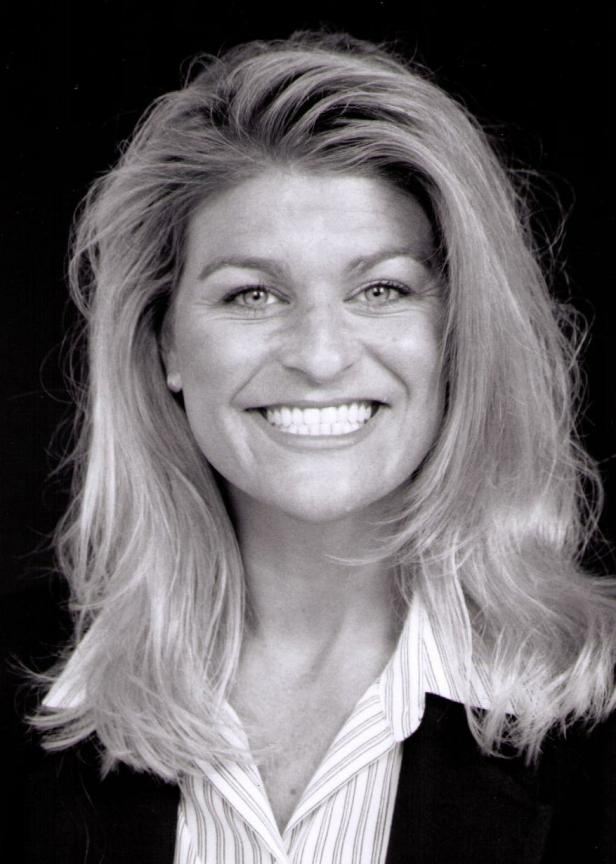

Your journey to superior healing and total wellness can begin today> we
look forward to discussing the issues that you are facing, working on
solutions and helping to implement those changes in your life.
Our practice specializes in treating a variety of conditions. We treat
patients daily who suffer from chronic lower back and neck pain,
headaches, repetitive stress disorders, sports injuries, work injuries
and whiplash. Our care is unique. We provide for our patients excellent
chiropractic care, applied kinesiology, physio-therapy modalities, as
well as professional nutritional counseling.
Born in Oberlin, KS, Dr. Unger was a graduate of DCHS. He attended
Kansas State University. Dr. Unger earned his B.S. degree in General
Science and his Doctor of Chiropractic Degree in 2000 from Palmer
College of Chiropractic in Davenport, IA. In the spring of 2000, he
interned under Dr. Fair at Fair Chiropractic Clinic in Oberlin, KS.
In Aug. 2000, Dr. Unger started practice at Unger Chiropractic Clinic in
St. Francis, KS, and also became an associate at Fair Chiropractic
Clinic in Oberlin, KS.
Dr. Unger has advanced training in the diagnosis and treatment of
structural disorders and total body wellness. He utilizes a
multi-disciplinary approach. This approach includes using applied
kinesiology, adjustments of the spine and extremities, supplemental
nutrition, and low level laser, so that all patients receive the best
possible care.
Dr. Shannon Addleman
A former Oberlin resident and graduate of DCHS, Dr. Addleman earned her
chiropractic degree in 1998 at National College of Chiropractic, same
college as Dr. Fair. She has two children, Brynna and Bryant.
Experienced in the "Thompson Techinique", Dr. Addleman brings with her a
special adjusting table to offer the patients a different approach to
wellness care. Dr. Addleman also utilizes the Koren Specific technique.
Dr. Addleman joined Fair Chiropractic Clinic in May, 2007. She has
practiced chiropractic in Colorado and in areas of Chicago, Illinois.

Services
Chiropractic Treatment
The doctor of chiropractic is a specialist in spinal musculoskeletal
disorders. We are expertly trained to diagnose and treat the many
musculoskeletal injuries that may occur on the job, in sports, or in
your daily life.
Upon injury, the individual often alters the normal position or
flexibility of the spinal vertebrae. Chiropractic treatment is designed
to restore normal alignment and thus minimize pain and suffering. Gentle
manipulative adjustments are often effective in rapidly returning the
injured person to a productive status. The doctor of chiropractic can
also provide guidance with advice designed to reduce work-related
injuries, proper lifting procedures and therapeutic stretching
exercises.
Techniques Utilized:
Applied Kinesiology (AK)
Allergy/Sensitivity Elimination and Reprogramming Technique
Chromatherapy (Color)
Low Level Laser Therapy
Detoxification Therapy (EB-305)
Electrical Muscle Stimulation
Emotional Therapy
Eyelight Therapy
Magnetic Field Therapy
Myofascial Release
Neurofeedback
Nutritional consultation
Ultrasound
Orthotics
Bodylight Fat Reduction
SlimCO Bodylight Fat Reduction and Facial Rejuvenation.
Unlike invasive weight loss surger, our procedure is applied
externally.
This revolutionary method provides results without the dangers
associated with surgery.
Unlike surgical liposuction, our non-surgical lipo-sculpting allows
you to remain active-during treatment.
Sessions with our fat loss Slim Co system are easy, painless, and
carefree. Each session takes less than an hour. The slimming machine
is used for a total of 15 minutes. The system is applied to the
targeted area, which is generally the waist, hips, or thighs, for 15
minutes. The minimum suggested treatment period is two weeks, with
three full sessions each week. You should consult your technician
about the maximum results for your body type, weight, and target loss.
Many clients have described the session as relaxing, and even Zen.
Some even try to catch up on phone calls with friends and loved ones
as they lie down and the system removes excess fat. You simply lie in
a comfortable, stationary position for twenty minutes at a time, in a
relaxed environment.
Since the fat loss Slim Co system uses cutting edge technology, you
fell nothing during the procedure. You may feel a bit different and
lighter as you exit the treatment center due to the bio-stimulation
that begins in your body to remove excess fat.
You are always welcome to listen to music, or just close your eyes and
rest during the procedure. Listening to white noise such as running
water or ocean waves is always a relaxing way to spend the sessions.
Ultimately, the treatment with our fat loss Slim Co system is a stark
contrast to traditional methods of fat reduction procedures such as
liposuction and gastric-bypass surgery. With our Slim Co weight loss
system, you can simply lie down, relax, and let the Slim Co do all the
work.
Facial Rejuvenation
BodyLight lightwave technology stimulates the production of
collagen and elastin in your skin cells for a pain-free,
surgery-free alternative for facial rejuvenation.
Our facial therapy can help reverse signs of aging by tightening
skin, reducing the appearance of fine lines and/or wrinkles,
lightening aging spots and also lightening dark under eye
circles. Bodylight facial therapy also helps smooth facial
blemishes and dramatically improves the complexion of skin
damaged by acne or sun.
For a younger natural appearance, try Bodylight Facial
Rejuvenation.
*These statements have not been evaluated by the Food and Drug
Administration. This product is not intended to diagnose, treat,
cure or prevent any disease.
Bodylight sessions have the ability to reduce body mass through
simple, painless, and noninvasive techniques. We target the areas
of the body that tend to be difficult to target through diet and
exercise. With the newest advancements in technology, patients can
find themselves on the fast track to confidence through a simple
Bodylight session.
The Bodylight emits special frequency light waves that safely
penetrate the skin and are absorbed by the fat cells. This light
stimulation opens the pores to the fat cells allowing water,
glycerol and free fatty acids to move out of the fat cells and
into the space between the cells. The fat cells then shrink while
the excess water, glycerol and free fatty acids are safely removed
by your body's own metabolic process.
Though the majority of fat can be removed through diet and
exercise, there are some areas of the body that need a little
help. Our LED Bodylight is a non-invasive session that can be very
effective in contouring the body by eliminating fat in those hard
to lose areas.
Patients who are concerned with their body mass index can find a
helpful solution with our fat reduction system. Without any
painful incisions or long term programs, the amount of
subcutaneous fat can be easily reduced, resulting in a leaner body
shape.
Results may vary from person to person due to lifestyle, body type
and dedication to the program. No individual results should be
seen as typical. Testimonials are stories of individual success
and should not be taken as a guarantee.
"I'm a woman in my fifties. I have gone down 3 jean sizes [using
the Bodylight] and have noticed that my skin looks and feels more
toned and softer than before. After just 2-3 session I noticed
these differences and have been most pleased. The bonus is that I
have more energy and am more conscientious of my diet and exercise
routine. The Bodylight has been a great motivator for me."
-Pleased Patient from Oberlin, KS
Expedited Bodylight Session:
15 minute Bodylight
10 minute Vibrator Plate
Price: $50.00
Complete Bodylight session:
15 minute Bodylight
10 minute Bivrator Plate
15 minute Erchonia EB footbath
Price: $65.00
Massage
Kirsten Lavers, Certified Massage Therapist
Kirsten graduated from the Massage Therapy progam at Colby
Community College in 2014. She is certified in many modalities of
massage including Swedish, Hot Stone, Deep Tissue, and
Reflexology. When not working, Kirsten can be found reading,
playing with her dogs, or taking a nap. With many family of her
family members living in town, she's excited to make Oberlin her
permanent home. ​Her hours are Mon-Wed 12:00-6:00, Thur
7:30-12:30, Fri12:00-6:00 and at least one Saturday a month.
First Visit
What Can I Expect During My First Visit to a Chiropractor?
Consultation
On your first visit to our office you will be welcomed by our
receptionist with a warm smile. You will then be asked to fill out our
required forms which will help us gain some information about yourself
and your spinal health. Save time by filling out the forms ahead of
time.
After reviewing your case history, you and the doctor will discuss your
condition to determine if chiropractic care may be of benefit to you. If
we find that your condition would be better served by another physician,
you will be referred to a doctor that will be able to help you the most.
However, if our doctor feels he can help you, we will begin our
examination with your consent. Through out this process, our focus is to
help you achieve your optimal health potential.
Examination
After a thorough consultation with the doctor, you will undergo a
chiropractic examination. This will include testing your reflexes and
range of motion as well as other standard orthopedic, neurologic,
postural, and physical examinations. From this, the doctor will gain
valuable information regarding your condition and a better understanding
of how chiropractic can help you. If necessary, the doctor may recommend
X-rays or refer you for additional testing procedures.
X-ray
X-rays are sometimes required to get a full evaluation of a patient's
condition. The need for X-ray is considered on a case by case basis.
However, if needed, our office has an on-site, state of the art x-ray
facility for your convenience.
Spinal Adjustment
If both you and the doctor decide that chiropractic care is appropriate,
spinal adjustments will begin immediately. Other treatment may include
low level laser, physical therapies , and/or soft tissue therapies. Most
of our patients begin to see results from the very first spinal
adjustment. Our special gentle, yet effective, alignment of the body is
interactive with the patient; gentle enough for kids, yet able to
restore function and movement for the athlete and senior.
Home Instructions
Prior to leaving, patients will be given instructions on certain
activities or procedures to be conducted at home. This may include ice
or heat application instructions, avoidance of certain activities or
positions, as well as home exercises and/or stretches.
Schedule Your Next Appointment
You will be given a convenient appointment time for your follow-up
visit. Generally speaking, patients are seen within 1-2 days and are
provided with a complete review of findings.
Contact Us
Oberlin Clinic
504 N Penn Ave
Oberlin, KS 67749
Phone: (785) 475-2219
Fax: (785) 475-2210
Oberlin Office Hours:
Dr. Unger available Monday (PM), Tuesday (All Day), and Thursday
(All Day).
Dr. Addleman available Monday (AM), Wednesday (AM), Thursday (AM)
and Friday (All Day).
Monday: 8:30am to 6:00pm
Tuesday: 7:30am to 6:00pm
Wednesday: 8:30am to 6:00pm
Thursday: 8:30am to 6:00pm
Friday: 8:30am to 4:00pm
Two Saturdays a Month: 9:00am to 1:00pm
St. Francis Clinic
120 N Scott St
St. Francis, KS 67756
Phone: (785) 332-2186
St. Francis Office Hours:
Dr. Unger
Monday: 8:30am to 12:00pm
Wednesday: 1:00pm to 5:00pm
Friday: 8:30am to 3:00pm
Oberlin Clinic
St. Francis Clinic
CDL Medical Exam
Dr. Ryan R. Unger, D.C. and Dr. Shannon R. Addleman, D.C. are both
certified medical examiners for DOT driver physicals. We are available 5
days a week and 2 Saturdays a month for appointments in 2 locations.
With the new guidelines for medical certification we are attaching an
employer and driver checklist that will help prevent delays in
qualification.
Employer Checklist:
Driver Checklist:
If you have been diagnosed with:
Adult ADD/ADHD
Have a history of seizures/nurological issues
Heart conditions
Diabetes
Please contact our office for further instructions before your
appointment date.
Please fill out this form and bring it with you to your appointment
(first page only)